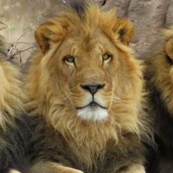
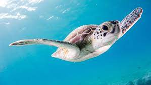
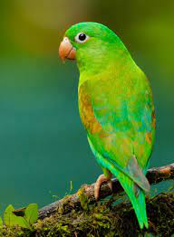

Fox

Elephant
This animal is the biggest mammal on land.
Orca or Killer Whale
This marine mammal is known for its distinctive black and white coloration and is the largest member of the dolphin family. What is its common name?
Cobra
This venomous snake is known for its distinctive hood, which it expands when threatened.
Bat
This tiny mammal holds the title for being the only flying mammal and is capable of using echolocation.
Lion

Quills
Porcupines use these to protect themselves from predators
Shark
Often referred to as the "king of the ocean," this apex predator has several species, including the great white and hammerhead. What is this fearsome creature?
Leatherback Turtle
Unlike most turtles, this type has a soft and flexible shell, lacking the hard scutes found in other species.
Octopus
Despite its name, this marine animal is not a true fish. It lacks a backbone and is known for its ability to change colors rapidly.
Panda
Warm
All mammals are __ blooded
Sea Turtles
These ancient creatures are known for their distinctive shells and are often seen nesting on sandy beaches. What are these reptiles commonly found in oceans?
Chameleon
Found in arid regions, this lizard is known for its ability to change color to match its surroundings.
Cockatoo
Native to Australia, this bird is known for its exceptional ability to mimic human speech and other sounds.
Turtle

Giraffe
The tallest land mammal
Anglerfish
Found in the darkest depths of the ocean, this bioluminescent creature is known for its light-producing organ and is often portrayed in popular culture. What is the name of this deep-sea dweller?
Dinosaurs
Often referred to as "terrible lizards," these prehistoric reptiles roamed the Earth millions of years ago.
Poison Dart Frog
Found in the rainforests of Central and South America, this amphibian is known for its vibrant colors and toxic skin.
Bird

Cheetah
The fastest land mammal
Coral Reefs
These colorful marine animals, often mistaken for plants, provide a habitat for numerous ocean species. What are these living structures formed by the accumulation of polyps?
Alligator
Recognized for its broad snout and "alligator smile," this crocodilian species is native to North America and China.
Peacock
During mating season, the male of this bird species performs an intricate dance with vibrant plumage to attract a mate.